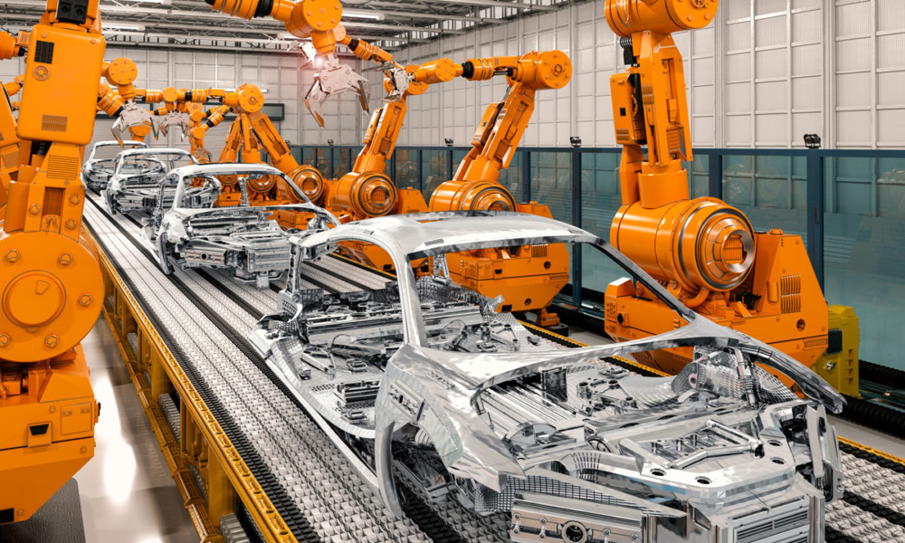
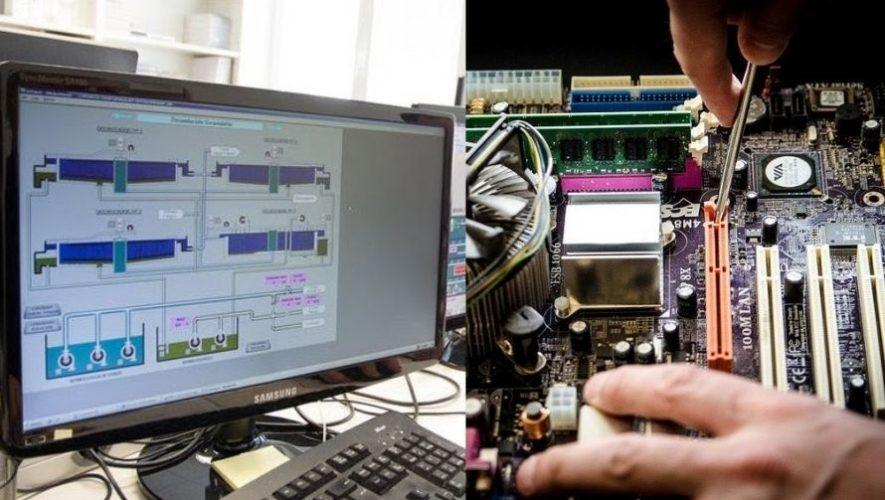

Carreras
- inicio
- Carreras
- Becas
- calendarios
- autoridades
electronica
la especialidad de electronica es una de las tantas en cuanto a lo que contamos junto a las demas de los bachilleratos tecnicos. Cuenta con 3 años de estudio, y tambien una amplia variedad de aereas de trabajo como los talleres y salones distribuidos entre la parte delantera del colegio, y los ubicados cerca de las canchas en el aerea de basica, ademas de contar con la educación en las materias basicas y las distribuidas en cuanto a las lecciones aprendidas

automotriz
en automotriz podemos encontrar a la atraccion numero uno a la hora de llevar los proyectos en las exposiciones a los mas populares dentro de toda la feria al rededor del bachillerato.
esta es una de las tantas especialidades tecnicas con los 3 años de estudio, llevando las materias principales que se manejan en tercer ciclo, exceptuando las materias basadas en la moralidad y la ética comunes en los diplomados de 2 años como la materia de orientación para la vida (OPV) y las demas enfocadas en dar información adicional sobre como llevar acabo las investigaciones
Diplomado en computación
el diplomado en computación, enfocado en el manejo y el aprendizaje de la programación en general, el manejo de las paginas web y el distinto desarrollo de estas mismas. ademas de aprender de estas anteriores, tambien podremos tomar la experiencia en las reparaciones de hardware y software, aumentando nuestro conocimiento sobre los ordenadores y sus modelos, junto al aprendizaje sobre distintos programas de software
en esta se abarca las materias basicas aprendidas en tercer ciclo junto a las materias secundarias como orientación para la vida, seminario, moral urbanidad y civica, y las distintas materias que se abarcaran las demas lecciones de lo que podriamos estar aprendiendo concerniente al diplomado, como el mantenimiento de las pcs y distintas variantes sobre el diplomado, para el momento de la graduación llegar con una base para desarrollar practicas generales en la universidad o tomar empleos de medio tiempo
